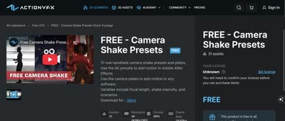
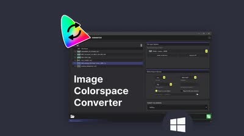

記事・リンクを検索
⌘K
31 件のポスト

Image EngineのLighting Supervisor、Arvid Schneider氏が運営するCG Loungeのジャーナル。様々な記事がまとめられている。

レンダラーごとに異なるノード名をまとめて比較できるサイト「Render Node Comparison」。レンダラーを切り替えた際にノード名がわからない時に便利。

VFXにおけるAIのワークフローを共有するプラットフォーム。

VFXとAIに関する記事を定期的に更新しているウェブサイト。AIとは付き合っていくしかないという考えのもと紹介している。

Blenderを使ってシネマティックなルックを再現するチュートリアル「Home At Last」。

EA、Weta、Tencentなどでコンセプトアーティストを務めたJulien Calle氏によるチュートリアル「Sci-fi Concept Art: Create Cinematic Key Frames」。

Vitaly Bulgarov氏によるSci-fi向けキットバッシュアセット「MEGASTRUCTURE」。海外のアーティストに広く使われている印象がある。

Blenderで制作されたヨーロッパの都市景観作品のプロセスを解説する80lvの記事。スキャンアセットからパーツごとのアセット制作方法などが学べる。

モデリングから全工程をカバーする背景制作チュートリアル「Arch Masterclass I: Mastering Environments with Vray」。

MayaとArnoldを使ってLegoのブラスターを制作するチュートリアル動画。小規模なアセットを丁寧に作り込む機会は少ないとして紹介している。

ILMのAssociate VFX Supervisor、Falk Boje氏による背景制作チュートリアル「How to Create a Sci-Fi Environment in 3ds Max」。作業自体はシンプルながら高品質な結果が得られる。

Falk Boje氏のYouTubeチャンネル。

3ds Max背景制作チュートリアル「Japanese River」制作者による、他の作品。

3ds Maxを使った背景制作のチュートリアル「Japanese River」。詳細な解説のため、3ds Maxを使っていなくても学べる内容が多いとしている。

ゲーム環境における汚れや風化の表現について解説する動画「Weathering & Grime in Game Environments」。物理法則に基づいたシェーディングを学べる内容。

SpeedTreeをゼロから解説するチュートリアル「Speedtree 10 - Zero to Hero」。SpeedTreeのチュートリアルは少ないため貴重だとしている。

地形の3Dスキャンモデルを購入できるサイト「The Terrain Domain」。Megascansにはないような地形も多く扱っている。

HoudiniでVEXを書く際のサポートツール「VEX Manager」。

ILMやAxis Studioに在籍していたSteven Croman氏による3D Matte Paintingのチュートリアル。DMP（デジタルマットペイント）のチュートリアルは少ないため貴重だとしている。

彫刻などの3Dモデルを無料で入手できるサイト「Three D Scans」。商用利用の可否は不明だが、自主制作には十分使える。

無料で使える高品質な車の3Dアセットを提供するサイト「Wire Wheels Club」。

ILMのGeneralist、Yen Chen氏が自身の作品制作に使用したHDA「CH Tools」を無料公開していること。Scatterに重要な機能が多く含まれている。

靴やカメレオンなどをテーマにしたテクスチャリングのチュートリアル。Substance Painterの使い方が参考になり、背景制作にも活かせるとしている。

HoudiniのInstanceについて体系的に理解するのに役立った記事「An Even Longer-Winded Guide to Instancing in Houdini」。

CG Cinematographyのウェブサイトに掲載されているライティング技法の記事。主にCGアニメーション作品を扱っているが、様々なテクニックが紹介されている。

今川雅史氏による都市の背景制作チュートリアル「Cinematic Shot Design | Modern city」。カメラシェイクを加える方法にも触れられている。

Anthony Eftekhari氏による3D Matte Paintingのチュートリアル。主にMaya、3ds Max、Photoshopを使用する。

ActionVFXが提供する無料のカメラシェイク素材。Nukeでトラッキングすることでリアルなカメラシェイクを再現できる。

カラースペースを変換できる無料のWindows向けアプリケーション「Image Colorspace Converter」。

Blizzard EntertainmentのSenior Art Director、Anthony Eftekhari氏による構図とデザインについての無料チュートリアル「Composition & Staging Series」。

The Rookies 2024優勝者であるAntoine Barbannaud氏によるチュートリアル。複数のソフトを組み合わせた高品質な内容で、背景制作のワークフロー学習におすすめとしている。